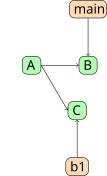
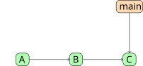
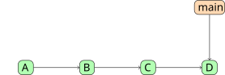
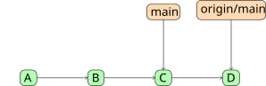
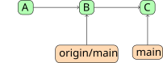
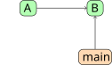
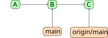
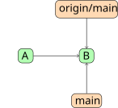
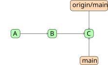
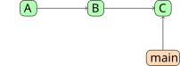

Fins ara, Git ha pogut unificar les nostres branques automàticament.
Git és capaç de gestionar canvis que no interfereixen entre ells (p.e., una branca edita el fitxer A i l’altra el fitxer B).
També és capaç de gestionar múltiples canvis en un mateix fitxer, sempre que no sigui al mateix lloc (p.e. una branca edita el principi del fitxer A i l’altra el final).
Però què passa si les dues branques han modificat la mateixa part d’un fitxer?
Conflictes
Imaginem que tenim el fitxer README.md:
Hola!
Creem una branca b1 i modifiquem el fitxer (amb el seu commit corresponent):
Hola des de b1!
Tornem a main i també modifiquem el fitxer:
Hola des de main!
El graf de commits ara és:

I ara procedim a unificar-ho fent un merge des de b1 cap a main.
Conflictes
Quan fem el merge:
git switch main
git merge b1
Git detecta que hi ha un conflicte!
Les dues històries han modificat la mateixa part del fitxer.
CONFLICT (content): Merge conflict in README.md
[...]
Git no fa assumpcions sobre el contingut del fitxer, i per tant no pren la decisió per nosaltres.
CONFLICT (content): Merge conflict in README.md
Automatic merge failed; fix conflicts and then commit the result.
Conflictes
Si executem git status veurem que Git ens indica que hi ha fitxers amb conflictes pendents de resoldre:
$ git status
On branch main
You have unmerged paths.
(fix conflicts and run "git commit")
Unmerged paths:
(use "git add <file>..." to mark resolution)
both modified: README.md
no changes added to commit (use "git add" and/or "git commit -a")
Conflictes
Git modifica el fitxer per indicar-nos on és el conflicte.
Per exemple, README.md ara conté:
<<<<<<< HEADHola des de main!=======Hola des de b1!>>>>>>> b1
Les marques indiquen:
<<<<<<< HEAD
canvis de la branca actual (en el exemple: main)
=======
canvis de l'altra branca (en el nostre exemple: b1)
>>>>>>> b1
Resolent el conflicte
Per resoldre el conflicte hem de decidir quin contingut volem.
Podem decidir conservar una versió o l’altra, o una combinació de les dues.
Editem el fitxer eliminant les marques <<<<<<< HEAD, =======, i >>>>>>> b1 i deixant el contingut desitjat.
Per exemple, editem README.md per a que contingui:
Hola des de main i b1!
Resolent el conflicte
Un cop hem resolt tots els conflictes del fitxer (no hi ha les marques), podem indicar a Git que aquest fitxer està llest.
Per fer-ho, executem git add <file>. En el nostre cas, fariem git add README.md.
ALERTA Git no comprova que, efectivament, haguem resolt el conflicte. Confia en el nostre criteri! Abans de fer git add, ens hem d’assegurar que el fitxer és correcte.
Acabant el merge
Un cop hem resolt tots els conflictes de tots els fitxers, podem continuar amb el nostre merge:
$ git status
On branch main
All conflicts fixed but you are still merging.
(use "git commit" to conclude merge)
Changes to be committed:
modified: README.md
Seguint les instruccions que ens dona Git, fem git commit per acabar el merge correctament.
Conflictes durant un rebase
Els conflictes també poden aparèixer quan fem un rebase.
git rebase main
Si Git no pot aplicar automàticament un dels commits, el rebase s’atura i ens demana que resolguem el conflicte.
El procés és:
git rebase
resolem el conflicte
git add <file>
git rebase --continue
Sempre podem cancel·lar el rebase fent git rebase --abort
Gestió de branques
Visualitzant branques del repositori
A mesura que un projecte evoluciona, tindrem branques que ja no fem servir (p.e. perquè ja hem fet el merge).
Git ens proporciona eines per visualitzar branques:
git branch: mostra la llista de totes les branques (l’asterisc mostra la branca actual)
git branch -v: mostra totes les branques i el seu últim commit (amb el missatge)
git branch --merged: mostra les branques que s’ha fet merge cap a la branca actual (també hi ha --no-merged)
Eliminant branques
git branch -d <branca>: elimina la branca <branca>del repositori
Nota sobre eliminar branques: Si intentem eliminar una branca sense que s’hagi fet un merge previ cap a la branca actual, Git ens donarà un error. Si estem segurs d’eliminar la branca, potencialment perdent la feina feta, podem fer servir git branch -D <branca>.
Renombrant branques
git branch --move <nom vell> <nom nou>: canvia el nom de la branca.
Nota: a continuació veurem que Git ens permet col·laborar amb altres persones. No renombreu branques que s’estiguin fent servir per altres persones.
Git és un sistema de control de versions distribuït.
Això significa que cada repositori conté una còpia completa de la història del projecte.
No necessitem estar connectats a Internet per consultar la història, crear commits, crear branques, comparar versions, etc.
Però si diverses persones treballen en un mateix projecte, com podem compartir els canvis?
Repositori locals i remots
Git no estableix cap repositori com a “central”, sinó que els canvis es poden intercanviar entre ells.
flowchart LR
A["Repositori d'Alice"]:::wide
B["Repositori de Bob"]:::wide
C["Nostre repositori"]:::wide
A <--> B
A <--> C
B <--> C
classDef wide padding:100px
El nostre repositori s’anomena local, i els que es troben en altres sistemes remots.
Durant la vida del projecte, anirem sincronitzant la història del repositori local amb la història dels repositoris remots.
Repositoris locals i remots
Alternativament, podem tenir un repositori que utilitzem com a punt de trobada entre diferents persones.
flowchart LR
A["Repositori local<br/>Alice"]:::wide
B["Repositori remot"]:::wide
C["Repositori local<br/>Bob"]:::wide
A <--> B
B <--> C
classDef wide padding:100px
Aquest repositori remot és un repositori Git normal, que li donem un ús especial.
Repositoris remots
Per fer referència a un repositori remot, Git ens permet associar-hi noms.
Per convenció, el repositori remot “principal” (p.e. GitHub, GitLab…) s’anomena origin.
Donat el nom, podem referir-nos a les branques del repositori remot.
main i origin/main
Suposem que tenim un repositori local amb una branca main i un repositori remot anomenat origin.
Repositori local:

Repositori remot:

main i origin/main
Un cop hem sincronitzat el repositori remot amb el local, des del repositori local veiem això:

Tenim dues branques:
main: fa referència a la branca local
origin/main: fa referència a l’estat conegut de la branca main al repositori remot origin
main i origin/main
Podem fer merge, rebase, reset… fent servir la branca remota per incorporar els seus canvis al nostre repositori local.
Però consultar o utilitzar origin/main no implica una connexió amb el servidor remot.
origin/main és una referència que tenim dins del nostre repositori local. Per sincronitzar el nostre repositori amb el repositori remot necessitarem comandes noves.
Interaccionant amb repositoris remots
Les operacions bàsiques són:
git clone Crea un repositori local a partir d’un repositori remot
git fetch Descarrega informació i commits nous del remot
git push Publica els nostres commits al remot
git pull Descarrega els canvis del remot i els integra
git clone
Per començar a treballar amb un projecte que ja existeix en un repositori remot:
git clone <url>
Per exemple:
git clone https://example.com/projecte.git
Git crea un nou directori amb:
els fitxers del projecte
tota la història del repositori
la configuració necessària per interactuar amb el repositori remot
git push
Imaginem que hem fet nous commits al nostre repositori local:
Local:

Remot:

Podem publicar els nostres commits al repositori remot amb git push:
Local:
Remot:
push envia els nostres commits al repositori remot.
git fetch
Ara imaginem la situació contrària: algú ha publicat nous commits al repositori remot:
Local:
Remot:
Podem descarregar aquests nous commits amb git fetch:
Local:

Remot:
fetch descarrega els canvis, però no modifica la nostra branca actual.
git pull
Hem vist que git fetch descarrega els nous commits del repositori remot, però no modifica la nostra branca actual.
Si volem descarregar els canvis i integrar-los directament a la nostra branca actual, podem fer servir git pull
git pull combina dues operacions:
git fetch
git merge
Per exemple, si estem a main, git pull seria equivalent conceptualment a: 1. git fetch 2. git merge origin/main
git pull
Local:

Remot:
git pull
Local:

Remot:

Conflictes amb remots
Degut a que la història del repositori remot pot divergir de la nostra, podem trobar-nos amb aquestes situacions:
Quan fem push, el repositori remot ens pot rebutjar l’operació perquè la branca remota té commits que nosaltres no tenim.
Quan fem pull, els canvis remots i locals poden haver divergit. En aquest cas, la integració pot requerir un merge o un rebase i, si hi ha conflictes, Git aturarà l’operació perquè els solucionem.
Per evitar sorpreses, és recomanable actualitzar sovint la informació del nostre repositori sobre els remots amb git fetch i integrar els canvis remots regularment.
Recap
Hem après a treballar amb diferents línies de la història d’un projecte:
Una branca ens permet desenvolupar diferents camins a partir d’una mateixa història.
Podem tornar a unificar aquests camins amb merge o reorganitzar-los amb rebase, tot i que a vegades hem de resoldre els conflictes.
Els commits poden tenir noms fàcils de recordar mitjançant tags, i les branques són referències que avancen a mesura que fem nous commits.
Recap
Git és distribuït: cada repositori té la seva pròpia còpia de la història.
flowchart LR
A["Repositori local"] <--> B["Repositori remot"]
Podem sincronitzar els repositoris amb:
git fetch
git pull
git push
I quan les històries divergeixen, Git ens pot demanar que integrem els canvis o que resolguem conflictes.